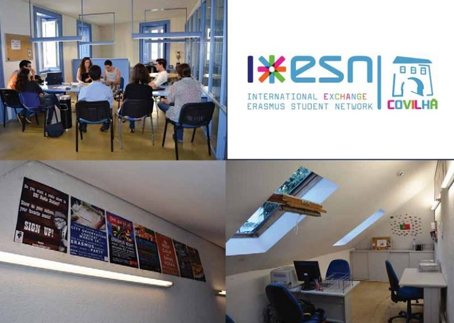
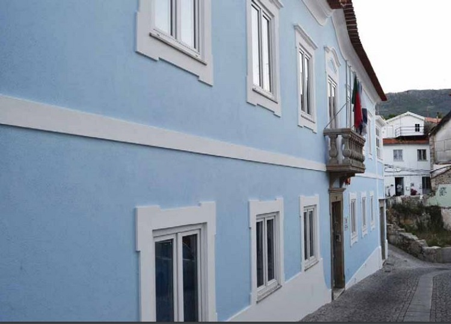

Erasmus in Covilha
Erasmus in CovilhaAlthough young, the University of Beira Interior (UBI) has already earned national and international recognition. One of the internationalization areas of UBI is the participation in the ERASMUS programme, since 1986. From there University has an Erasmus students support named International Erasmus Support. After a few years the Buddy programme went into action to help the students using the mentoring system, thus each student have a friend to help in the host city. The ESN project was started by two former Erasmus UBI students that had contact with this organization. When they returned, decided to create ESN Covilhã, gathering a team and started to work in academic year 2011/2012. It is a long process from Candidate Section until ESN Section, but the developed work make them be in a louder position for the ESN Portugal evaluation. The evaluation was positive and ESN Covilhã was born in way to make our Erasmus have the best days of them life’s. Erasmus Student Network (ESN) is a nonprofi t international student organization. The mission is to represent international students, thus provide opportunities for cultural understanding and self-development under the principle of Students Helping Students. ESN covilhã 5 There are 12.000 members from 396 local sections in 36 countries working on a volunteer base in Higher Education Institutions and offering services to 150.000 students.
Students associations
The University of Beira Interior Academic Association is a student organization that aims to defend, support and monitor students when necessary as well as the incorporation of academic life. The Academic Association was created under the premise to defend, fi ght and achieve victories for all represented students, along 24 years this work continues with the same dedication and principles from the beginning. The successive directions have been working towards for this cause, creating structures to approximate AAUBI and University students by a responsible and sustainable way. Increasing the credibility of our institution by working together with the Rectorate team because cannot be forgotten the primary principle is to help and support the students in all kind of situations. This way, we will pronounce about the social problems that students have and we will work together with the Rectory and with all students in this fi eld. AAUBI develops along the year distracting and ludic activities being recognized at national level (Freshman Reception and Academic Week). On AAUBI headquarters there are other services available for you, as a library, a stationery store and other services that are being developed.
People associated with ESN Covilha are wonderful people. They are very positive and helpful. During my stay there were many meetings organized by them, joint exits and trips: Porto, Lisbon, Salamanca